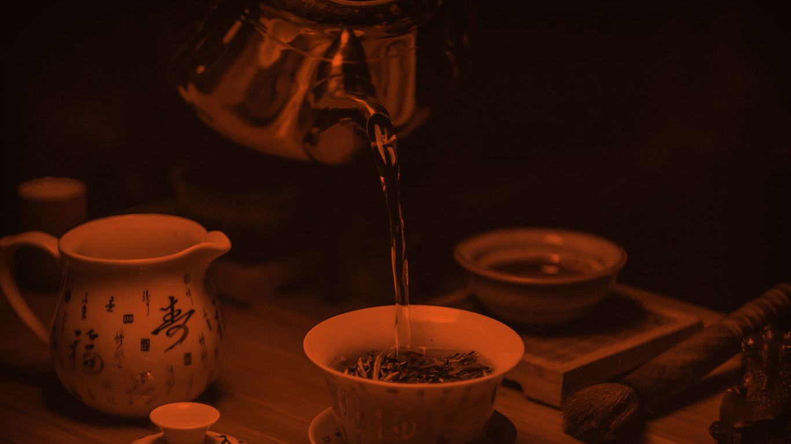

Fitoterapia
O INCRÍVEL MUNDO DA MEDICINA ALTERNATIVA
É importante ressaltar que a utilização de plantas medicinais para o tratamento de doenças, através do estímulo das defesas naturais
do nosso corpo, não substitui o tratamento médico normal, mas auxilia na prevenção de doenças. A seguir você irá encontrar receitas
de fácil preparo, elaboradas à base de folhas, flores, hastes, Cascas e sementes. Com a utilização do método de infusão, onde
a água quente é despejada sobre a planta, e o método de decocção, onde as plantas são fervidas junto com a água.

Artrite
Inflamação de uma ou mais articulações do corpo, muito comum na velhice ou em pessoas obesas. É recomendado a pratica de exercícios regularmente, e para reduzir a dor aplique compressa de gelo ou água quente no local.
Chá por infusão de Cordão-de-Frade
Ingredientes:
- 2 Colheres (sopa) de folhas fatiadas de cordão-do-Frade
- 2 Copos de água quente
Modo de Preparo: Deixe as folhas fatiada em infusão durante 20 minutos em um recipiente tampado. Coe e beba 3 xícaras (chá) ao dia, adoçado com 1 colher (sobremesa) de mel.
Chá por infusão de Macaé
Ingredientes:
- 2 Colheres (sopa) de folhas e flores fatiadas de Macaé
- 2 Copos de água quente
Modo de Preparo: Deixe as folhas e flores fatiada em infusão durante 20 minutos em um recipiente tampado. Coe e beba 3 xícaras (chá) ao dia, adoçado com 1 colher (sobremesa) de mel.
Chá por infusão de Marcelinha
Ingredientes:
- 2 Colheres (sopa) de folhas fatiadas de Marcelinha
- 2 Copos de água quente
Modo de Preparo: Deixe as folhas prateadas em infusão de 20 minutos em recipiente tampado. Coe e beba 3 xícaras (chá) ao dia ou banhe as regiões do corpo afetadas.
Artrose
Danos à cartilagem proporcionado pelo uso repetitivo das articulações ao longo dos anos, que leva a dor nas articulações e inchaço.
Chá por infusão de Cavalinha
Ingredientes:
- 2 Colheres (sopa) de hastes picadas de cavalinha
- 2 Copos de água quente
Modo de Preparo: Deixe as hastes picadas em infusão durante 20 minutos em recipiente tampado. Coe e beba 3 xícaras (chá) ao dia.
Chá por decocção de Aipo
Ingredientes:
- 2 Colheres (sopa) das sementes trituradas de Aipo
- 3 Copos de água
Modo de Preparo: Ferva as sementes trituradas durante 30 minutos em recipiente tampado. Coe e beba 3 xícaras (chá) ao dia..
Chá por infusão de Urtiga
Ingredientes:
- 1 Colher (sopa) de folhas fatiadas de Urtiga
- 2 Copos de água quente
Modo de Preparo: Deixe as folhas fatiadas em infusão durante 20 minutos em recipiente tampado. Coe e beba 3 xícaras (chá) ao dia, adoçado com 1 colher (sobremesa) de mel.
Dor muscular
São dores que afetam os músculos, geralmente causados por esforço físico intenso. É recomendado a ingestão de bastante líquido, procure manter o peso ideal e não exagere nos exercícios que não está acostumado a fazer.
Chá por infusão de Alfazema, Alecrim e Manjerona
Ingredientes:
- 2 Colheres (sopa) de folhas fatiadas de Alfazema, Alecrim e Manjerona
- 2 Copos de água quente
Modo de Preparo: Deixe as folhas fatiadas em infusão durante 15 minutos em recipiente tampado. Coe e beba 3 xícaras (chá) ao dia.
Chá por infusão de Girassol
Ingredientes:
- 1 Colher (sopa) das folhas e talos fatiados de Girassol
- 2 Copos de água quente
Modo de Preparo: Deixe as folhas e talos fatiados em infusão durante 15 minutos em recipiente tampado. Coe e beba 3 xícaras (chá) ao dia.
Você também pode usar, individualmente, com a mesma preparação e medidas: Laranjeira, Hortelã, Salsa, Alfazema e Absinto.
Chá por decocção de Salgueiro
Ingredientes:
- 2 Colheres (sopa) da casca fatiada de Salgueiro
- 2 Copos de água
Modo de Preparo: Ferva a casca durante 15 minutos em recipiente tampado. Coe e beba 3 xícaras (chá) ao dia.
Osteoporose
Doença que promove a decomposição dos ossos, deixando-os porosos. É recomendado a pratica de exercícios regularmente para fortalecer os músculos, evite cigarro e álcool, invista em alimentos ricos em cálcio e pegue 30 minutos de sol todo dia.
Chá por infusão de Brócolis ou Amoreira
Ingredientes:
- 2 Colheres (sopa) de folhas fatiadas de Brócolis ou Amoreira
- 2 Copos de água quente
Modo de Preparo: Deixe as folhas fatiadas em infusão durante 20 minutos em recipiente tampado. Coe e beba 3 xícaras (chá) ao dia.
Chá por decocção de Nabo
Ingredientes:
- 2 Colheres (sopa) de Nabo ralado
- 2 Copos de água
Modo de Preparo: Ferva o Nabo ralado durante 20 minutos em recipiente tampado. Coe e beba 3 xícaras (chá) ao dia.
Chá por decocção de Cavalinha
Ingredientes:
- 2 Colheres (sopa) da casca fatiada de Salgueiro
- 2 Copos de água
Modo de Preparo: Ferva as hastes picadas durante 20 minutos em recipiente tampado. Coe e beba 3 xícaras (chá) ao dia.
Diabetes
É uma doença de alto risco causada pela incapacidade do pâncreas de produzir insulina suficiente, o não tratamento imediato desta doença pode ocasionar a morte do indivíduo.
Chá por infusão de Erva-cidreira
Ingredientes:
- 2 Colheres (sopa) de folhas fatiadas de Erva-cidreira
- 2 Copos de água quente
Modo de Preparo: Deixe as folhas fatiadas em infusão durante 20 minutos em recipiente tampado. Coe e beba 3 xícaras (chá) ao dia.
Você também pode usar, individualmente, com a mesma preparação e medidas: Visco, Limão, Eucalipto, Agrião, Graviola e Urtiga
Chá por infusão de Dente-de-Leão
Ingredientes:
- 2 Colheres (sopa) de folhas fatiadas de Dente-de-Leão
- 1 Copo de água quente
Modo de Preparo: Deixe as folhas prateadas em infusão de 10 a 15 minutos em recipiente tampado. Coe e beba 2 a 3 xícaras de chá ao dia. .
Atenção:As folhas de Dente-de-Leão também podem ser usadas em saladas.